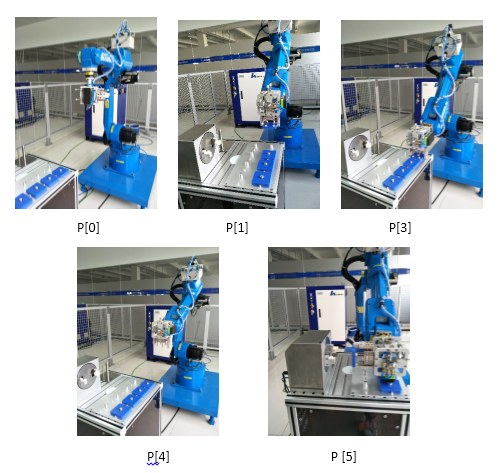
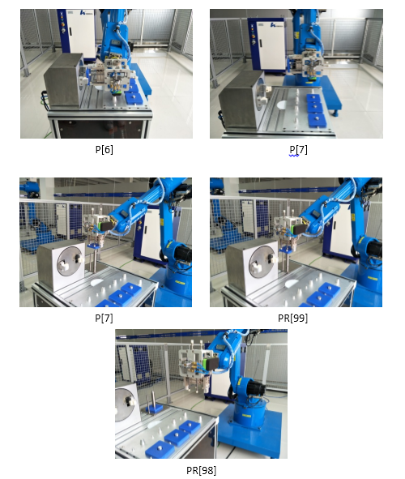

5.2数控车床上下料编程与操作
5.2.4示教编程
1.程序的编写表5-2 变量说明
表5-2 变量说明
| 序号 | 变量 | 说明 |
|---|---|---|
| 1 | P[0] | 零点 |
| 2 | P[1] | 工作过渡点 |
| 3 | P[2] | 上下料等待点 |
| 4 | P[3] | 上下料点 |
| 5 | P[4] | 放置点右侧1 |
| 6 | P[5] | 放置点正上方 |
| 7 | P[6] | 放置点 |
| 8 | P [7] | 放置点右侧2 |
| 9 | PR[99] | 示教拾取点位置数据 |
| 10 | PR[98] | 示教拾取点正上方 |
| 11 | PR[0] | 中间变量 |
| 12 | PR[10] | 中间变量 |
表5-3 主程序
| 序号 | 程序内容 | 程序说明 |
| 1 | PR[99]=PR[0] | 数据和信号初始化 |
| 2 | PR[98]=PR[1] | |
| 3 | Y[1,3]=OFF | |
| 4 | Y[1,6]=OFF | |
| 5 | Y[1,7]=OFF | |
| 6 | LOOKAHEAD=ON | |
| 7 | J P[0] 50% CNT50 | 零位 |
| 8 | J P[1] 50% CNT50 | 工作过渡点 |
| 9 | CALL zcx 4 | 调用子程序4次 |
| 10 | J P[1] 50% CNT50 | 工作过渡点 |
| 11 | J P[0] 50% FINE | 零位 |
| 12 | LOOKAHEAD=OFF | |
| 13 | END |
表5-4 子程序
| 序号 | 程序内容 | 程序说明 |
|---|---|---|
| 1 | J PR[98] 50% CNT20 | 拾取点正上方 |
| 2 | L PR[99] 300mm/sec FINE | 拾取点 |
| 3 | Y[1,3]=ON | 机器人夹爪夹取工件 |
| 4 | WAIT X[2,1]=ON | 打开下料卡盘准备夹紧工件 |
| 5 | L P[98] 300mm/sec CNT20 | 拾取点正上方 |
| 6 | J P[2] 50% CNT20 | 上下料等待点（上料点正右方） |
| 7 | L P[3] 100mm/sec FINE | 上下料点 |
| 8 | Y[1,7]=ON | 夹具夹紧工件物料 |
| 9 | WAIT X[4,5]=ON | 等待夹具夹紧工件 |
| 10 | Y[1,3]=OFF | 机器人夹爪释放工件 |
| 11 | WAIT X[2,0]=ON | 等待夹爪完全释放工件 |
| 12 | L P[2] 300mm/sec FINE | 机器人回上料等待点，等待 |
| 13 | Y[1,6]=ON | 夹具旋转90° |
| 14 | WAIT X[4,3]=ON | 旋转到位检测 |
| 15 | WAIT 5sec | 等待工件进行加工，在实际应用中表现为等待加工完毕信号 |
| 16 | Y[1,6]=OFF | 夹具回转90° |
| 17 | WAIT X[4,2]=ON | 回转到位检测 |
| 18 | L P[3] 100mm/sec FINE | 上下料点 |
| 19 | Y[1,3]=ON | 进行下料 |
| 20 | WAIT X[2,1]=ON | |
| 21 | Y[1,7]=OFF | |
| 22 | WAIT X[4,4]=ON | |
| 23 | L P[2] 300mm/sec CNT20 | |
| 24 | J P[4] 50% CNT20 | 放置点右侧1 |
| 25 | J P[5] 50% CNT20 | |
| 26 | L P[6] 100mm/sec FINE | 放置点 |
| 27 | Y[1,3]=OFF | 进行工件放置 |
| 28 | WAIT X[2,0]=ON | |
| 29 | L P[5] 300mm/sec FINE | 放置点正上方 |
| 30 | J P[7] 50% CNT20 | 放置点右侧2 |
| 31 | PR[99,0]=P[99,0]+100 | 计算下一次个拾取点 |
| 32 | PR[98,0]=P[99,0] | |
| 33 | END |
2.目标点的示教
该应用比较简单，我们可以使用默认的工具0和工件0进行示教编程。在手动界面中设置工具坐标系为工具0，设置工件坐标系为工件0，手动操作机器人到目标点位置并记录该位置。需示教的位置数据或位置寄存器如表5-5中所示，其对应的位置如图5-4所示。
表5-5 位置数据或位置寄存器
| 序号 | 变量 | 说明 |
|---|---|---|
| 1 | P[0] | 零点 |
| 2 | P[1] | 工作过渡点 |
| 3 | P[2] | 上下料等待点 |
| 4 | P[3] | 上下料点 |
| 5 | P[4] | 放置点右侧1 |
| 6 | P[5] | 放置点正上方 |
| 7 | P[6] | 放置点 |
| 8 | P [7] | 放置点右侧2 |
| 9 | PR[99] | 示教拾取点位置数据 |
| 10 | PR[98] | 示教放置点位置数据 |


图5-4 目标点位置
视频 5-1 上下料_调试